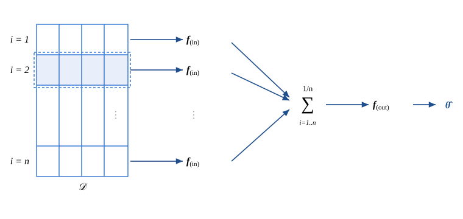

Full-information NNE#
This page describes the full-information neural net estimator (full-information NNE), based on Wei and Jiang (2026), “Estimating and Assessing Identification of Structural Models via Deep Learning” (see paper below).
Unlike the original NNE, which feeds the neural net a set of researcher-specified moments \(\boldsymbol{m}\), full-information NNE uses the whole dataset as input. It can automatically exploit variation in the data, and is thus useful not only for estimating a structural model but also for assessing the identification of the model.
Below we give a brief overview of full-information NNE, and then provide the code we use to estimate: (i) a mixed logit model, and (ii) a search model with unobserved consumer heterogeneity.
Overview#
Suppose that a structural econometric model specifies some outcome of interest \(\boldsymbol{y}_i\) as a function of some observed attributes \(\boldsymbol{x}_i\), some unobserved shocks \(\boldsymbol{\varepsilon}_i\), and a parameter vector \(\boldsymbol{\theta}\). Examples are random utility maximization, consumer search, entry game, etc. A dataset is \(\mathcal{D} = \{\boldsymbol{y}_i, \boldsymbol{x}_i\}_{i=1}^{n}\), and we assume observations are i.i.d. across \(i\) (e.g., cross-sectional or panel data). We train a neural net as follows.
Simulate data. For each \(\ell\), draw \(\boldsymbol{\theta}^{(\ell)}\) from a prior. Given \(\boldsymbol{\theta}^{(\ell)}\), use the structural model to simulate \(\boldsymbol{y}_i^{(\ell)}\) given \(\boldsymbol{x}_i\) for each \(i\). Let \(\mathcal{D}^{(\ell)} \equiv \{\boldsymbol{y}_i^{(\ell)}, \boldsymbol{x}_i\}_{i=1}^{n}\).
Repeat. Repeat the first step \(L\) times to obtain \(\{\boldsymbol{\theta}^{(\ell)}, \mathcal{D}^{(\ell)}\}_{\ell=1}^{L}\).
Train a neural net with the architecture below to predict \(\boldsymbol{\theta}^{(\ell)}\) from \(\mathcal{D}^{(\ell)}\).
The neural net uses a two-part architecture that exploits the i.i.d. data structure. The first part transforms each observation into a vector of features. The second part then maps the averaged features across \(i\) into an estimate of \(\boldsymbol{\theta}\). This architecture is essential to make the training feasible. In implementation, the architecture can be coded as a convolutional neural net (CNN).

The two-part architecture. Each observation \(i\) in the dataset \(\mathcal{D}\) is mapped to a feature vector by \(\boldsymbol{f}_{(\mathrm{in})}\); the features are averaged across \(i\); and the average is mapped by \(\boldsymbol{f}_{(\mathrm{out})}\) to an estimate \(\hat{\boldsymbol{\theta}}\).#
Importantly, this architecture is not restrictive: the trained neural net can still learn the full-information posterior \(\mathbb{E}(\boldsymbol{\theta} \mid \mathcal{D})\). In fact, the paper shows that the neural net converges to the full-information posterior as \(L\) grows. The paper also shows how a second neural net can be trained to learn \(\mathrm{Var}(\boldsymbol{\theta} \mid \mathcal{D})\). Finally, the paper shows how to make use of full-information NNE to assess the identification of a structural model.
Applications#
We provide Matlab code for two applications.
Likelihood is easy to simulate here, so full-information NNE does not really have an advantage over SMLE. But it offers a good setting to demonstrate and understand the method. |
|
A sequential search model with unobserved consumer heterogeneity. |
Paper#
Wei and Jiang (2026). “Estimating and Assessing Identification of Structural Models via Deep Learning.” SSRN